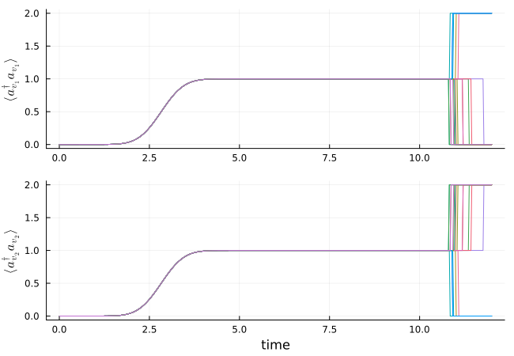

Hong-Ou-Mandel Effect
In this example, we simulate the Hong-Ou-Mandel effect, where two single photons in identical temporal modes impinge on a 50/50 beam splitter, which leads to bunching of the photons into one output port. We perform Monte-Carlo wave function trajectories which show this behavior.
using QuantumInputOutputusing SecondQuantizedAlgebrausing QuantumOpticsusing QuantumOpticsBase: daggerusing Plotsusing LaTeXStringsusing LinearAlgebra# symbolic Hilbert space and operatorshu1 = FockSpace(:u1)hu2 = FockSpace(:u2)hv1 = FockSpace(:v1)hv2 = FockSpace(:v2)h = hu1 ⊗ hu2 ⊗ hv1 ⊗ hv2au1 = Destroy(h, :a_u1, 1)au2 = Destroy(h, :a_u2, 2)av1 = Destroy(h, :a_v1, 3)av2 = Destroy(h, :a_v2, 4)# symbolic parameters@variables gu1::Number gu2::Number gv1::Number gv2::Number t::Real r::Real# input cavities, beam splitter, and output cavitiesS_bs = [r t; t -r]G_u1 = SLH(1, gu1' * au1, 0)G_u2 = SLH(1, gu2' * au2, 0)G_in = G_u1 ⊞ G_u2G_bs = SLH(S_bs, [0, 0], 0)G_v1 = SLH(1, gv1' * av1, 0)G_v2 = SLH(1, gv2' * av2, 0)G_out = G_v1 ⊞ G_v2G = G_in ▷ G_bs ▷ G_outH = hamiltonian(G)(-0.5conj(gu1)*gv1*r)im * a_u1 * a_v1' + (-0.5conj(gu1)*gv2*t)im * a_u1 * a_v2' + (0.5conj(gv1)*gu1*r)im * a_u1' * a_v1 + (0.5conj(gv2)*gu1*t)im * a_u1' * a_v2 + (-0.5conj(gu2)*gv1*t)im * a_u2 * a_v1' + (0.5conj(gu2)*gv2*r)im * a_u2 * a_v2' + (0.5conj(gv1)*gu2*t)im * a_u2' * a_v1 + (-0.5conj(gv2)*gu2*r)im * a_u2' * a_v2L = jump_operator(G)L[1]conj(gu1)*r * a_u1 + conj(gu2)*t * a_u2 + conj(gv1) * a_v1L[2]conj(gu1)*t * a_u1 - conj(gu2)*r * a_u2 + conj(gv2) * a_v2# Gaussian input mode (two single-photon pulses, u1 = u2)γ_ = 1.0T_p = 1 / γ_T_end = 12T_pσ = sqrt(0.5) * T_pu(t) = 1/(sqrt(σ)*π^(1/4)) * exp(-(t - 4σ)^2 / (2*σ^2))T = [0:0.002:1;] * T_endΔT = T[2] - T[1]# time-dependent couplings for input and output modesu1 = uu2 = ugu1_t = coupling_input(u1, T)gu2_t = coupling_input(u2, T)v1(t) = u(t)v2(t) = u(t)gv1_t = coupling_output(v1, T)gv2_t = coupling_output(v2, T)dict_p_t = Dict(gu1 => gu1_t, gu2 => gu2_t, gv1 => gv1_t, gv2 => gv2_t)# beam splitter parameters (50/50)η = 0.5r_ = sqrt(η)t_ = sqrt(1 - η)dict_p = Dict([t, r] .=> [t_, r_])# numeric basisbu1 = FockBasis(1)bu2 = FockBasis(1)bv1 = FockBasis(2)bv2 = FockBasis(2)b = bu1 ⊗ bu2 ⊗ bv1 ⊗ bv2au1_qo = destroy(bu1) ⊗ one(bu2) ⊗ one(bv1) ⊗ one(bv2)au2_qo = one(bu1) ⊗ destroy(bu2) ⊗ one(bv1) ⊗ one(bv2)av1_qo = one(bu1) ⊗ one(bu2) ⊗ destroy(bv1) ⊗ one(bv2)av2_qo = one(bu1) ⊗ one(bu2) ⊗ one(bv1) ⊗ destroy(bv2)# translate to numeric operatorsH_QO = to_numeric(H, b; parameter = dict_p, time_parameter = dict_p_t)L_QO = [to_numeric(Li, b; parameter = dict_p, time_parameter = dict_p_t) for Li in L]function input_output(t, ρ) Ht = H_QO(t) J = [L_QO[1](t), L_QO[2](t)] return Ht, J, dagger.(J)end# time evolutionψ0 = fockstate(bu1, 1) ⊗ fockstate(bu2, 1) ⊗ fockstate(bv1, 0) ⊗ fockstate(bv2, 0)time, ρt = timeevolution.master_dynamic(T, ψ0, input_output)# output observablesn_v1 = real.(expect(av1_qo' * av1_qo, ρt[end]))n_v2 = real.(expect(av2_qo' * av2_qo, ρt[end]))g2_v1 = round(real.(expect((av1_qo')^2 * (av1_qo)^2, ρt[end])) / n_v1^2, digits = 4)g2_v2 = round(real.(expect((av1_qo')^2 * (av1_qo)^2, ρt[end])) / n_v1^2, digits = 4)v1_v2_coinc = round(real.(expect((av1_qo' * av1_qo) * (av2_qo' * av2_qo), ρt[end])), digits = 4)@show g2_v1@show g2_v2@show v1_v2_coincg2_v1 = 1.0
g2_v2 = 1.0
v1_v2_coinc = 0.0
We can see that the two-photon correlation for each port is one and that the correlation between the two ports is zero.
In the following, we show Monte-Carlo wave function simulations to show the bunching of photons into one of the two output ports in each realization. To this end, we collapse the photon number at the end of the time evolution ($t > 0.9 T_{end}$) with the photon detection operator in each output mode $a^{+}_{v} a_{v}$.
R = 1 # collapse raten_v1_coll(t) = (t > 0.9*T[end])*R*av1_qo'av1_qon_v2_coll(t) = (t > 0.9*T[end])*R*av2_qo'av2_qofunction input_output_mc(t, ρ) Ht = H_QO(t) J = [L_QO[1](t), L_QO[2](t), n_v1_coll(t), n_v2_coll(t)] return Ht, J, dagger.(J)endNtraj = 20n_v1_mc_ls = [zeros(length(T)) for i = 1:Ntraj]n_v2_mc_ls = deepcopy(n_v1_mc_ls)for it = 1:Ntraj t_mc, ψt_mc = timeevolution.mcwf_dynamic(T, ψ0, input_output_mc) n_v1_mc = real.(expect(av1_qo' * av1_qo, ψt_mc)) n_v2_mc = real.(expect(av2_qo' * av2_qo, ψt_mc)) n_v1_mc_ls[it] = n_v1_mc n_v2_mc_ls[it] = n_v2_mcendp1 = plot()for it = 1:Ntraj plot!(p1, T, n_v1_mc_ls[it]; label = "")endplot!(p1; ylabel = L"\langle a^\dagger_{v_1} a_{v_1} \rangle", grid = true)p2 = plot()for it = 1:Ntraj plot!(p2, T, n_v2_mc_ls[it]; label = "")endplot!(p2; xlabel = "time", ylabel = L"\langle a^\dagger_{v_2} a_{v_2} \rangle", grid = true)plot(p1, p2; layout = (2, 1), size = (650, 450))
We can see that both photons always go together into one of the two detectors.
Package versions
These results were obtained using the following versions:
using InteractiveUtilsversioninfo()using PkgPkg.status( [ "QuantumInputOutput", "SecondQuantizedAlgebra", "QuantumOptics", "Plots", "LaTeXStrings", ], mode = PKGMODE_MANIFEST,)Julia Version 1.12.7
Commit 6d172b025e4 (2026-08-15 08:05 UTC)
Build Info:
Official https://julialang.org release
Platform Info:
OS: Linux (x86_64-linux-gnu)
CPU: 4 × INTEL(R) XEON(R) PLATINUM 8573C
WORD_SIZE: 64
LLVM: libLLVM-18.1.7 (ORCJIT, sapphirerapids)
GC: Built with stock GC
Threads: 1 default, 0 interactive, 1 GC (on 4 virtual cores)
Environment:
JULIA_PKG_SERVER_REGISTRY_PREFERENCE = eager
JULIA_DEBUG = Documenter,Literate
JULIA_NUM_THREADS = 1
Status `~/work/QuantumInputOutput.jl/QuantumInputOutput.jl/docs/Manifest.toml`
[b964fa9f] LaTeXStrings v1.4.1
[91a5bcdd] Plots v1.41.7
[18f9eda6] QuantumInputOutput v0.5.3 `~/work/QuantumInputOutput.jl/QuantumInputOutput.jl`
[6e0679c1] QuantumOptics v1.2.9
[f7aa4685] SecondQuantizedAlgebra v0.11.0
This page was generated using Literate.jl.